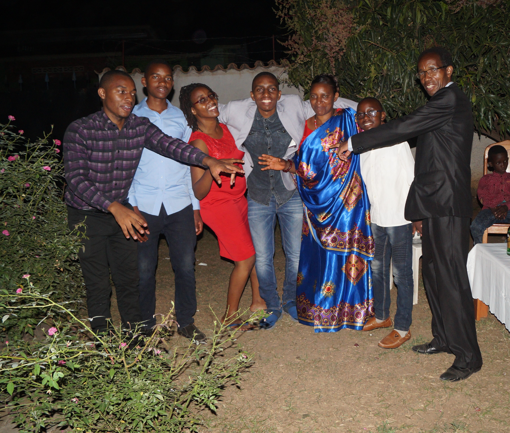

Famille NZOBONANKIRA
La famille de NZOBONANKIRA Salvator et sa femme NSENGIYUMVA Rénilde et leur enfants. Ils ont une seule fille et ainée qui s'appelle AJENEZA Fiona, les autres sont des garçons; le premier garçon s'appelle ABIZEYE Jean Bertin, le suivant NIYOMUKIZA Gautier, le troisième est NDAYISHEMEZE Pacome et en fin le dernier MANIRAKIZA Ghyslain
